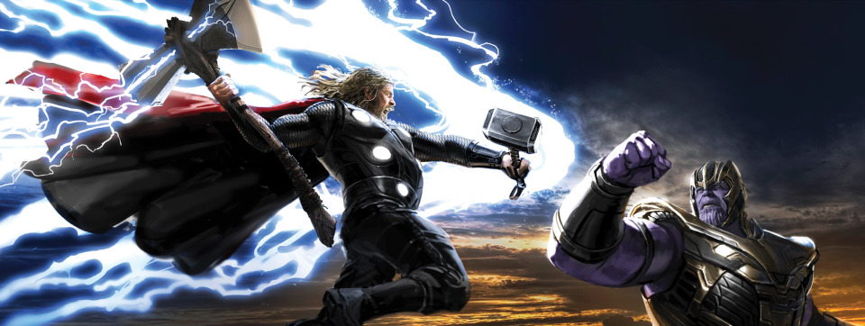
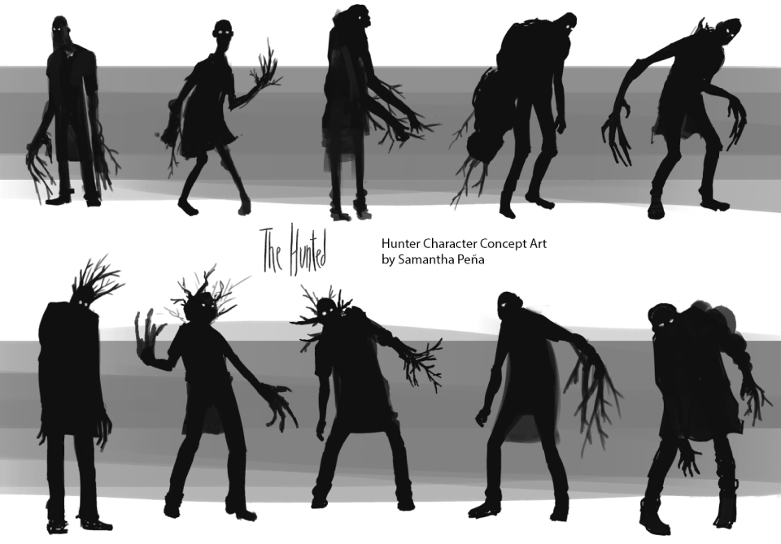
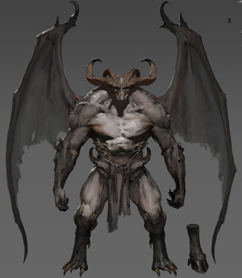
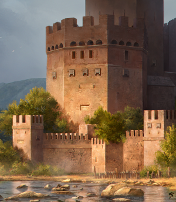
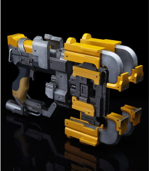
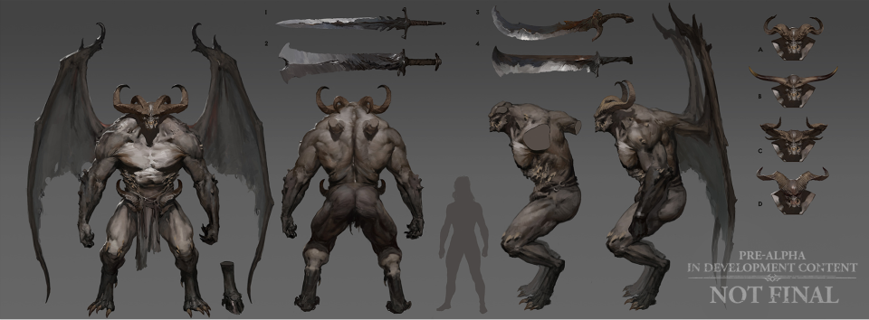
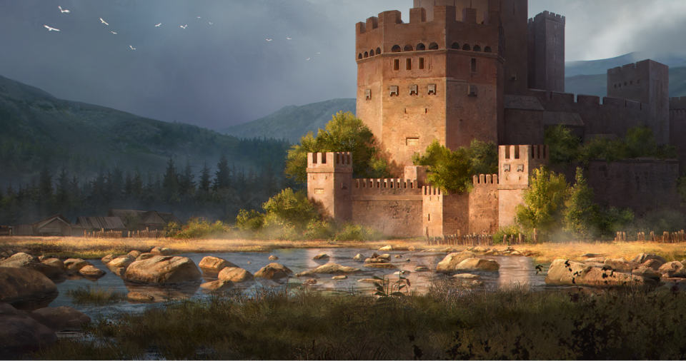
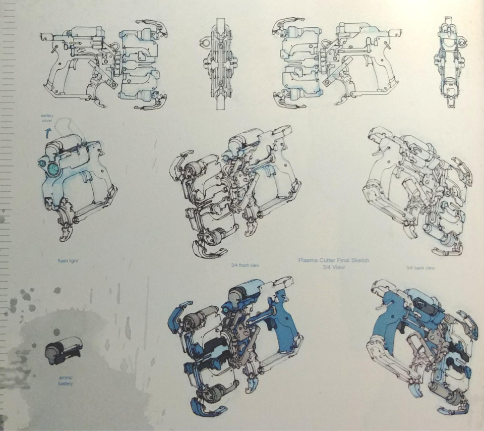

This form of art is different from other types of visual mastery. The main purpose of concept art is to convey the idea of a visual project before it takes its final shape and looks. Tons of sketches and mockups are created and reviewed daily before making their way into production. That concept art might not be sleek and polished, but there is no need for it. Other artists will transform these images into models, objects, and locations later on. The importance of conceptual art cannot be underestimated as it has become an integral part of creative projects.
Where is concept art used?
In order to fuel the creative process in projects, you will need a lot of visual concepts and skilled experts to create them. Without their initial first touch, no designers would dare to work on visuals and imagery. Usually, these people imagine and draw sketches for characters and environments for movies, video games, advertising, VFX, and animation. Concept art can be perceived as a process of taking scripts or just abstract words and visualizing them to communicate with the audience.
Every project has a pipeline, and the magic of concept art happens in the early stages. The creative flow runs wild in the beginning, and new images appear like from a cornucopia. Later on, they will be finalized and animated on the screen. The better a concept artist knows the craft and understands the task, the faster you can move on to the following stages. Experienced artists are highly demanded and often welcomed to work on projects with nine-figure budgets.

Avengers Endgame concept art by Ryan Meinerding
Every project has a pipeline, and the magic of concept art happens in the early stages. The creative flow runs wild in the beginning, and new images appear like from a cornucopia. Later on, they will be finalized and animated on the screen. The better a concept artist knows the craft and understands the task, the faster you can move on to the following stages. Experienced artists are highly demanded and often welcomed to work on projects with nine-figure budgets.
How do concept artists work?
It all starts with crude sketches. They define your general direction and your next move in particular. For example, a quick line art (contour drawing without fills) might be enough to give you a basic idea of the silhouette and scale of an object. It is super easy to make additions to concept art or fix things at this stage. If you don’t like your sketch, then make another one from scratch.

Monster silhouettes by Samantha Peña
When contours are finished, a concept artist divides the object into several areas, outlines the overall design and major iconic elements. For example, would it be a long winter storm coat or just a short jacket on the character’s shoulders? Heavy high boots or simple slippers on their feet? What about hair – long, short, or maybe bald? After answering such questions, the artist continues by adding more details. Now it is time to highlight materials, set the tone, and place some individual accents in the fresh concept art.
As for coloring, there is no need to rush – it can be postponed until the development stage. However, sometimes you need to do the opposite and build your concept art around certain colors. For instance, many superheroes have iconic color schemes that have a massive impact on the design of their suits. For Superman, it is always a mix of red, blue, and yellow. When drawing a costume/character concept art, you must not forget about references at all stages of development. Having real examples of fabrics comes in handy.
Let’s talk with concept art examples!
Needless to say that one must have a bright mind and vivid imagination to turn words into visuals. However, no matter how talented a concept artist might be, there are things that they can draw better. Hence, there are main specializations for concept artists:

Character/creature designers

Environment artists

Prop makers
The first two categories are self-explanatory, but it will be worth saying a few words about them here. Character design mainly concentrates on human or humanoid-like lifeforms that often appear in various sci-fi shows and fantasy games.

Early concept art for Diablo 4 (source: Blizzard Entertainment)
On the image above, you can see concept art for one of the demons the players will be slaying in the upcoming Diablo 4 game. The artists show that their creature designs can be flexible. Different body features and varied weapons are just the tip of the iceberg.
Environment concept artists are often called world builders. These people are in charge of creating unique places in fantasy worlds. Think of an impenetrable jungle on a distant planet or gorgeous medieval cities with recognizable architecture. How should they look and feel? That’s the question for the environment design team. They are not limited to crafting worlds but also work on smaller scenes, indoor environments, and imaginary settings.

The image of the post-apocalyptic world from The Last of Us by Naughty Dog
Last but not least goes prop & assets design. The guys with this specialization make various props such as weapons, vehicles, and smaller objects. It is arguably the most limitless category as it requires imagining countless things (lamps, scopes, tires, and so on) as well as their styles that would be suitable for a particular imaginary setting.

The concept art of the iconic plasma cutter from the Dead Space series by Visceral games
At the end of the day, think of all these artists as a magic tool that an art director or studio can use to figure out the project’s visual look in the very beginning.
Concept artists vs. illustrators:
what is the difference?
These two forms of visual art might seem similar or even the same for some. However, it would be wrong to put an equals sign between them. Concept art is very different from what an illustrator would do on a daily basis. Illustrators’ work is mostly about conveying emotions and strong feelings to sell something (promotional art). The job of a concept artist is to express ideas in a drawn form. For example, the designers of a video game might come to you with a basic idea of a new character, faction, weapon, or boss whatsoever. Your job would be to take those words, understand what is needed, and then draw something cool to represent it.
It is essential to understand that your concept art is a semi-finished product that can be transformed into something almost entirely new by other specialists. Your product is not meant to look amazing, polished, and flawless. The main purpose of concept art is to convey the idea as best as possible.
Of course, it is nice when the art is good, but the best concept artists are not necessarily great illustrators. They are just very creative and have a lot of extraordinary visions in their heads, so in the end, it is all about ideas. You can be a great concept artist and not-so-good illustrator and vice versa. Sure, with enough experience, one can excel at both roles, but generally speaking, the job is completely different.
At the end of the day, you will have to choose one path or another as a concept artist. Then you will have to choose your specialization – to work on characters, locations, or prop & assets design. Otherwise, there is a risk of spreading yourself too thin and not being particularly good at either.
What tools do concept artists use?
We live in the era of digital art, so no wonder that there is a wide range of tools to choose from. They allow you to tinker with textures, try different patterns, reiterate designs as many times as you wish. Quite often, software for drawing comes with nice features that simplify the process of sharing and reviewing. So here are a few programs that a modern concept artist needs:
Photoshop is a golden standard for the industry. It allows you to draw art from scratch or alter any imported image in a variety of ways. Love character design and prefer making textures for 3D models yourself? The program is flexible enough to help you with that.
ZBrush is a sculpting tool that replicates the process of traditional sculpting. When you have billions of polygons at your fingertips, you can bring to life super-detailed models. Import your previously created designs in ZBrush and enjoy easy animating and rendering.
Sketchbook Pro is a good Photoshop alternative for creating concept art. It is more affordable and easier to learn. The program might not be very popular but still provides similar tools for doing some pretty good job on your art. Probably the best choice for beginners who work with art but are not ready for huge investments.
Maya would be the #1 choice for artists working on 3D models and animation for gaming projects. We cannot say that Maya is easy to master, but the number of features it has is worth the effort. If you plan to become a professional modeler, familiarity with Maya should be on your priority list.
3ds Max Design is another heavyweight among 3D modeling software. The tool has proved its efficiency for building large open worlds and creating environment design. Artists love its powerful rendering capabilities and 3D modeling features. 3ds Max Design lets them create detailed models with relative ease.